Hertzien
Réception hertzienne de la télévision par le numérique terrestre : La "TNT" (Télévision Numérique Terrestre)
La Télévision Numérique Terrestre, mutation technologique, va étendre le principe de la numérisation du signal à sa diffusion par voie terrestre, ce qui permettra la réception d'une trentaine de services de télévision à vocation nationale. (Chaînes et services interactifs)
Les téléspectateurs devront s'équiper d'un décodeur ou faire l'acquisition d'un téléviseur numérique.
Une partie des chaînes sera accessible gratuitement, les autres seront payantes et feront l'objet d'un abonnement. (Voir le site du CSA)
Le démarrage de la TNT a commencé le le 31 mars 2005. Les antennes hertziennes classiques pourront recevoir la TNT sous réserve, dans un certain nombre de cas, d'une intervention destinée à les adapter à la réception des nouvelles fréquences numériques.
Dans tous les cas, l'installation existante doit être aux normes en vigueur suivant l'arrêté du 27 mars 1993. Nous vous conseillons de faire appel au COSAEL, organisme indépendant dont la mission est de vérifier que les installations d'antennes collectives ou de réseau interne de télévision répondent aux règles, spécifications et normes en vigueur dans les immeubles collectifs et les lotissements en France métropolitaine. Cet organisme pourra effectuer un diagnostique impartial de l'installation existante. Les installations que nous proposons sont faites dans le respect des normes en vigueur et notre qualifications vous garantie d'un travail fait dans les règles de l'art.
Satellite

Présentation
Les antennes satellites permettent la réception des chaînes françaises ou étrangères de radio et télévision en analogiques et en numériques.
La réception est directe, elle ne dépend pas des infrastructures locales, ni de la situation géographique.
La réception numérique offre une image exceptionnelle et le son numérique apporte une nouvelle dimension aux programmes TV et radios.
Notre entreprise est installateur agréé auprès des opérateurs.
Installation individuelle
Pour recevoir les programmes de télévision et de radio diffusés par satellites, il suffit de vous équiper d'une antenne satellite (parabole) et d'un récepteur satellite.
Votre téléviseur ne change pas s'il possède une prise Péritel.
D' installation facile et esthétique, l'antenne satellite trouve sa place dans tout type d'habitat. Elle se place en extérieur, dans le jardin, sur une terrasse, sur un toit ou sur un mur, elle se fera très discrète et vous permettra de recevoir différents programmes en numérique et analogique avec une qualité optimale.
Entreprise qualifiée, nous apporterons des solutions aux situations et demandes les plus complexes comme notamment la diffusion des programmes sur plusieurs postes de télévision, programmes différents vus simultanément et indépendamment d'une pièce à l'autre sur des postes différents.
Nous pouvons vous fournir toutes les précisions dont vous avez besoin, et procéder à l'installation en mettant en ouvre les moyens nécessaires pour vous garantir un travail esthétique et une réception de haute qualité.
Installation collective
L'installation d'une antenne satellite collective offre les mêmes avantages que ceux d'une installation individuelle. (Qualité de la réception, pluralité des programmes, etc..)
Elle garantie aussi la liberté de choisir ses programmes, le résident est libre de s'équiper ou non d'un terminal numérique pour recevoir les chaînes et radios gratuites diffusées par satellite, de s'abonner ou non à un bouquet numérique.
Le résident continuera à bénéficier gratuitement des chaînes hertziennes.
L'antenne collective évitera la multiplication des antennes individuelles qui dévalorise le côté esthétique de l'immeuble. En effet, le Droit à l'antenne (Faire lien avec partie Droit à l'antenne) permet dans la plupart des cas l'installation d'une antenne individuelle si l'immeuble ne propose pas de système collectif équivalent.
De plus, le câble, la télévision numérique terrestre à venir ou la télévision par l'ADSL, ont une capacité de diffusion limitée, et tout résident souhaitant recevoir des programmes indisponibles sur ces deux modes de diffusion pourra demander l'installation d'une antenne individuelle. L'installation satellite collective est donc complémentaire et compatible avec les autres modes de réception.
L'antenne collective apporte une valeur supplémentaire à l'immeuble.
L'installation d'une antenne satellite collective respecte la liberté de réception de chacun selon ce qui est décidé par la co-propriété :
- Raccordement de tous les appartements Si la majorité des résidants souhaitent bénéficier de l'installation collective, tous les appartements peuvent être raccordés à l'antenne collective et le financement pourra alors être complètement intégré dans les charges.
- Raccordement des seuls intéressés la collectivité peut financer la partie commune de l'installation et un supplément individuel sera demandé aux résidants raccordés.
- Prise en charge de l'installation par les seuls demandeurs.
- Entreprise qualifiée de part nos compétences techniques, nous garantissons un travail soigné, dans le respect des normes en vigueur, employant des matériels adaptés et performants.
- Fort de notre expérience, nous pouvons attester d'un grand nombre de références.
- Le respect des normes est obligatoire pour tout réseau de distribution de signaux audiovisuels.
- A ce titre, nous intervenons également pour des réfections et des mises aux normes des installations existantes, que ce soit en antenne satellite ou hertzienne, collective ou individuelle.
Pour vous aider dans votre décision de réfection d'une installation existante, nous vous conseillons de faire appel au COSAEL, organisme indépendant dont la mission est de vérifier que les installations d'antennes collectives ou de réseau interne de télévision répondent aux règles, spécifications et normes en vigueur dans les immeubles collectifs et les lotissements en France Métropolitaine. Cet organisme pourra effectuer un diagnostic impartial de l'installation existante.
Nos réalisations
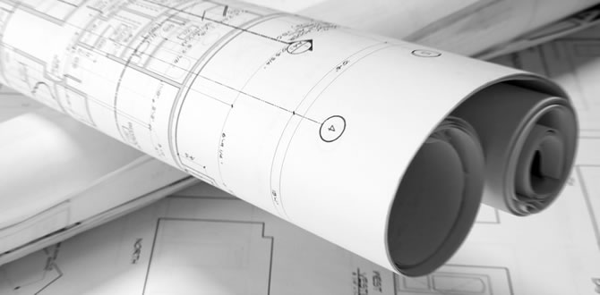
Voici quelques images de nos réalisations :
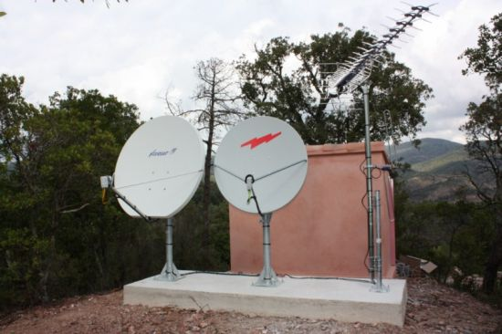
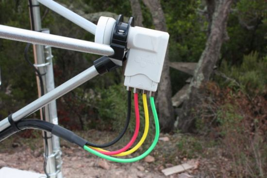
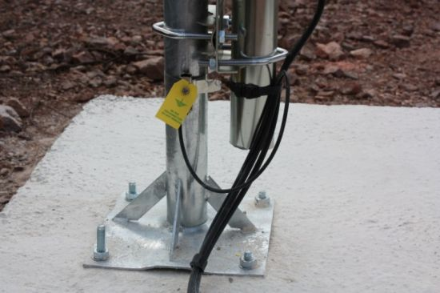
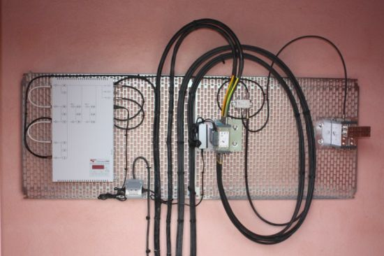
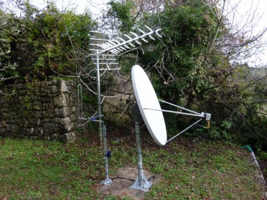
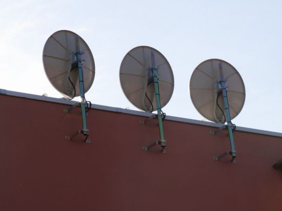
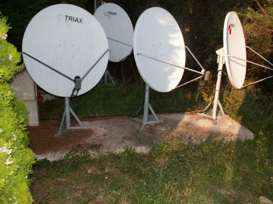
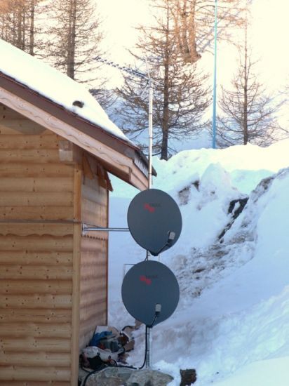
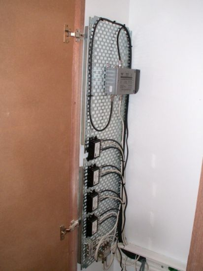
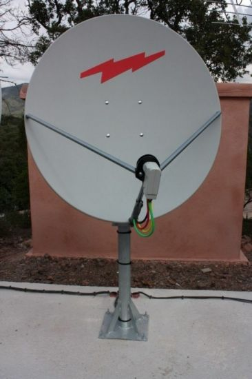
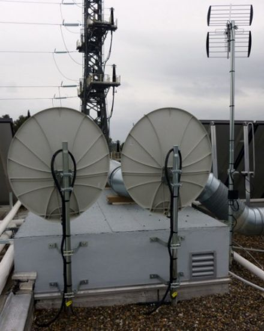
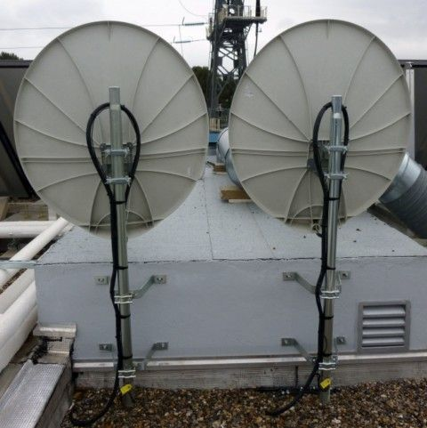
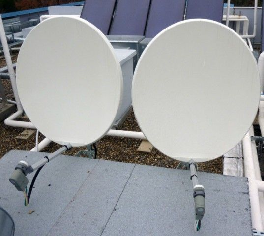
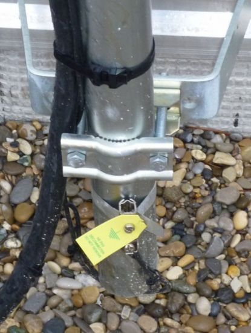
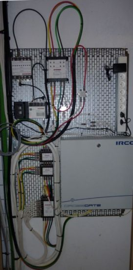
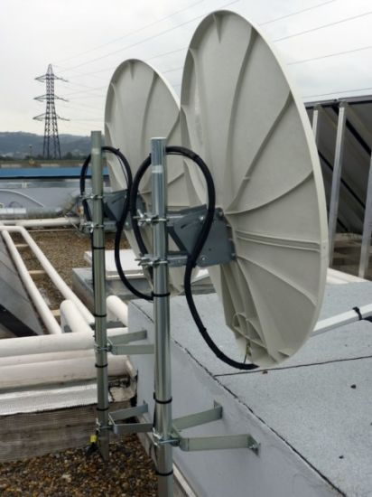
Nos références
Le Conseil Général des Alpes-Martimes
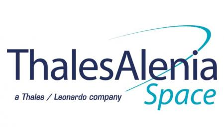
L'entreprise Thales Alenia Space
Nos partenaires
Nos partenaires
L'entreprise Digital-Services
L'entreprise AVM Multimédia
Nos fabriquants
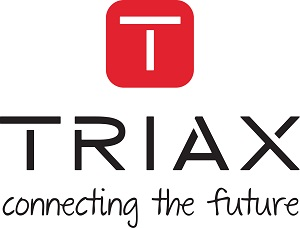
L'entreprise TRIAX
L'entreprise EVICOM
Liens

EAS-INGENIERIE
83 BIS Avenue Maurice Chevalier
06150 Cannes la Bocca
Tél. : 06.60.13.46.60 - Fax : 09.81.70.01.02
Contact

Si vous voulez me contacter pour la réalisation d'un devis, etc.. vous pouvez me contacter via :
- Mon téléphone : 06.60.13.46.60
- Ma boite mail : eric@eas-ingenierie.com
Plan
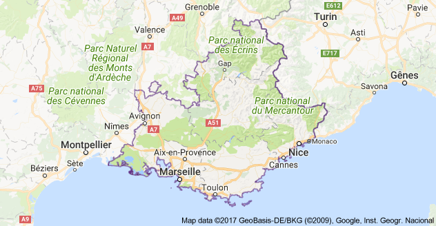
Notre plan d'accès